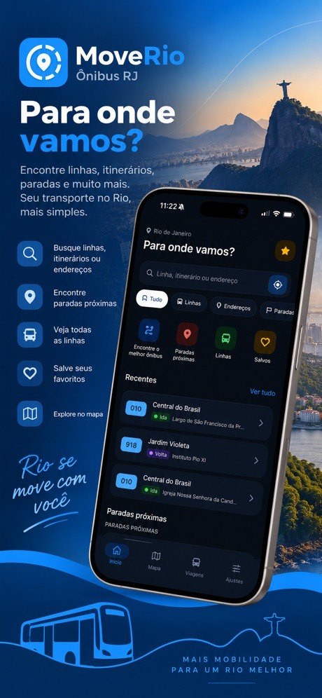
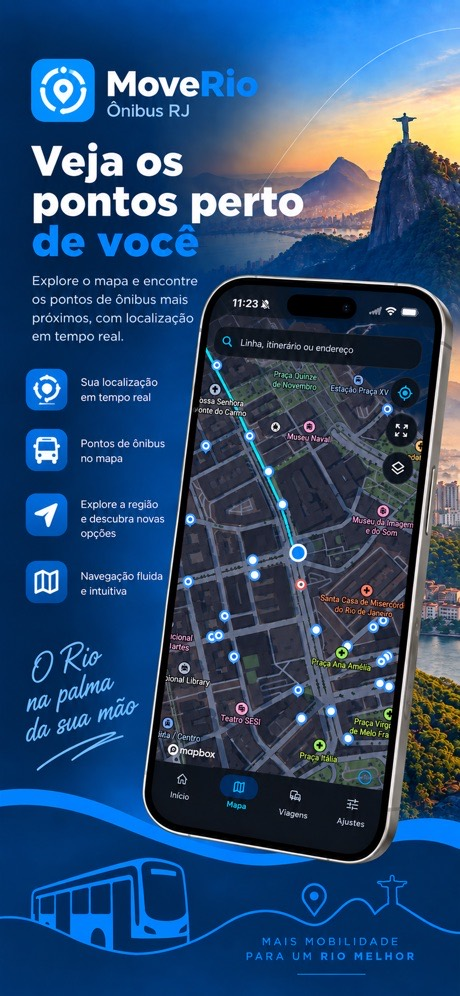
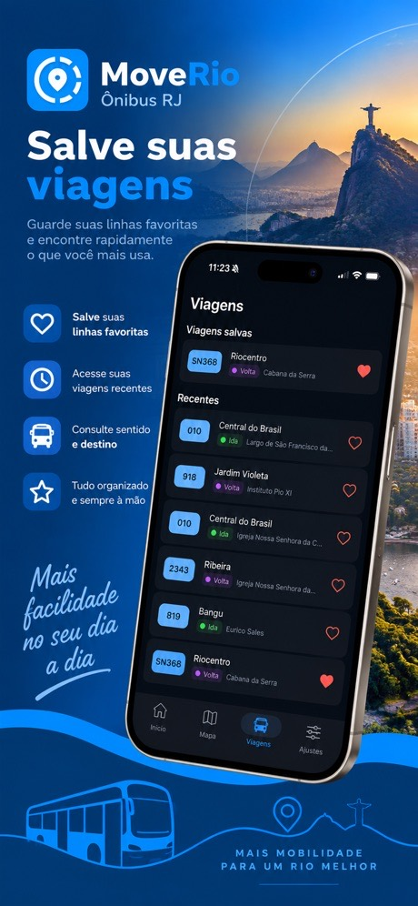
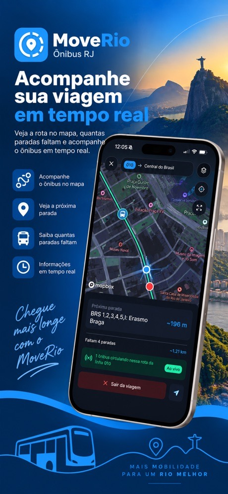

App mobile · Android e iOS
MoveRio
Os ônibus do Rio de Janeiro em um só lugar: linhas, itinerários, pontos e a posição dos ônibus em tempo real.
Telas




Sobre
O MoveRio reúne as linhas, os itinerários e os pontos de ônibus do Rio de Janeiro em um único app. Você digita uma linha, um ponto ou um endereço e ele encontra; diz para onde vai e ele mostra qual ônibus pegar, onde embarcar e quanto andar a pé.
Durante a viagem, o app acompanha a sua posição, mostra a próxima parada e avisa quando você chega, mesmo com a tela desligada. Quem assina o MoveRio Pro também vê os ônibus da linha se movendo no mapa.
Não é preciso criar conta. Favoritos e viagens recentes ficam salvos no próprio celular.
Recursos
- Busca única
- Linhas, pontos e endereços no mesmo campo de busca.
- Melhor ônibus
- Informe o destino e veja qual linha pegar, onde embarcar e a distância a pé.
- Acompanhamento da viagem
- Próxima parada, progresso e alerta de chegada, também em segundo plano.
- Ônibus em tempo real
- Posição aproximada dos ônibus da linha no mapa, a partir do GPS da frota.
- Pontos próximos
- Mapa com as paradas ao seu redor e as linhas que passam em cada uma.
- Rota a pé
- O trajeto até o ponto de embarque desenhado no mapa.
- Salvos e recentes
- Lugares favoritos e viagens recentes para repetir com um toque.
- Mapa orientado
- A bússola gira o mapa para a direção em que você está virado.
Planos
| Recurso | Grátis | Pro |
|---|---|---|
| Busca de linhas, pontos e endereços | Incluído | Incluído |
| Melhor ônibus e acompanhamento da viagem | Assistindo a um anúncio | Incluído |
| Rota a pé até o ponto | Assistindo a um anúncio | Incluído |
| Ônibus em tempo real | Assistindo a um anúncio | Incluído |
| Sem anúncios | Não incluído | Incluído |
O Pro tem plano mensal e anual; o anual sai com 2 meses de desconto.
Como foi feito
Desenvolvi o app em Flutter, com uma arquitetura organizada por feature. A base de linhas, itinerários e pontos é processada em isolates do Dart, com um índice espacial para achar paradas próximas e calcular o melhor ônibus no próprio aparelho, sem depender do servidor.
A posição dos ônibus vem de uma API própria em Go, que consulta periodicamente o GPS da frota publicado pela Prefeitura do Rio, guarda as posições em SQLite, filtra os veículos pelo trajeto e pelo sentido de cada itinerário e projeta a posição para o momento da consulta. Mapas, busca de endereços e rotas a pé usam o Mapbox.
- Flutter
- Dart
- Dart Isolates
- Mapbox
- Go
- SQLite
- Docker
- Firebase Analytics
- Crashlytics
- AdMob
- In-App Purchase
Privacidade
Sem conta e sem cadastro. A localização é usada no aparelho para mostrar pontos próximos e acompanhar a viagem, e não fica guardada em servidor. O app usa o Firebase para estatísticas de uso e relatórios de falha e exibe anúncios no plano gratuito.